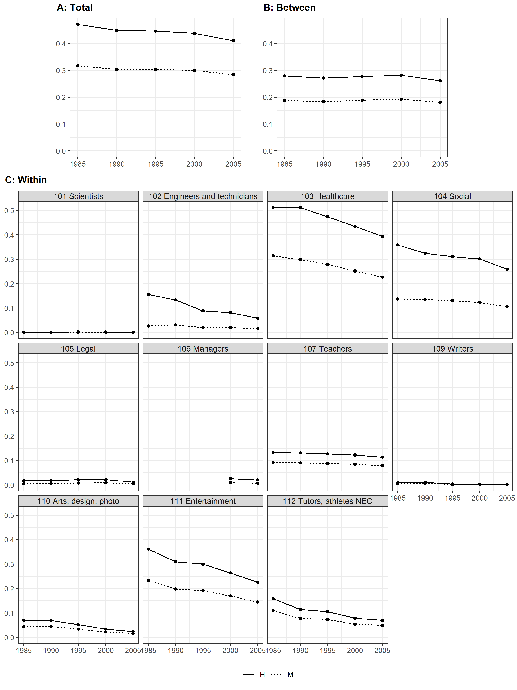
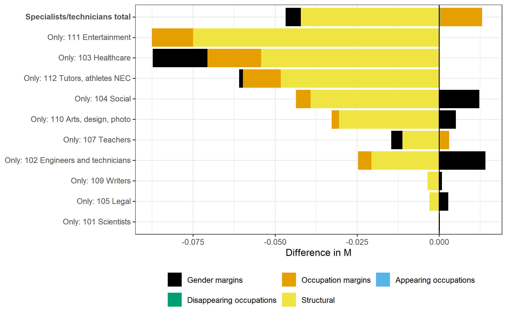

Of the major occupation groups, specialists and technicians shows
persistently high gender segregation by occupation. This major group includes
stubbornly segregated STEM (see Uchikoshi et al, 2020),
This task takes a closer look.
As a whole, employment of specialists and technicians grew from 6.4 million in 1985
to 8.5 million in 2005, as share of total
employment from 11% to 14%. Total spectech employment declined somewhat between 2000 and 2005
with male-dominant engineers and technicians taking the largest hit, from 29% of
this major group in 2000 to 25% in 2005. As a share, teachers' decline from 22% in
1985 to 16% in 2005 occurred mainly between 1985 and 1995.
Descriptive statistics: A. Specialists and technicians
1985
1990
1995
2000
2005
Sample size (in 1000)
6388
7180
8126
8568
8542
A. Number of occupations
Number of occupations
52
51
52
54
54
Appearing occupations
0
1
2
0
Disappearing occupations
1
0
0
0
B. Labor force participation (%)
Female
40
41
42
43
47
C. Distribution of occupational mid-level groups (%)
101 Scientists
2
2
2
2
2
102 Engineers and technicians
27
29
29
29
25
103 Healthcare
25
24
26
28
31
104 Social
6
6
6
7
8
105 Legal
1
1
1
1
1
106 Financial specialists
1
1
1
1
2
107 Teachers
22
20
18
16
16
108 Religious
2
2
2
1
1
109 Writers
2
2
2
2
1
110 Arts, Design, Photo
3
4
3
3
3
111 Entertainment
3
2
2
2
2
112 Tutors and sports
8
8
8
7
8
D. Female labor force by mid-level groups (%)
101 Scientists
9
11
13
14
16
102 Engineers and technicians
4
6
6
7
8
103 Healthcare
70
73
72
73
74
104 Social
87
85
85
86
86
105 Legal
8
10
12
14
15
106 Financial specialists
4
6
7
10
11
107 Teachers
42
43
45
47
48
108 Religious
18
17
17
16
15
109 Writers
21
25
29
32
34
110 Arts, Design, Photo
31
34
35
36
38
111 Entertainment
66
66
66
66
66
112 Tutors and sports
46
44
46
50
51
Women's participation in the spectech occupations grew from 40% in 1985
to 47% in 2005. Their gains are evident in most mid-level spectech groups. The
only noticable decline was in religious work. Their share of female-dominated
healthcare rose further, and was essentially flat in female-dominated social work and
entertainment.
When total segregation is decomposed into the sum of segregation between
mid-level groups and a weighted sum of segregation scores within these groups,
we see that the between contribution for mid-level spectech groups is more
than double that seen at the major group level.
This implies that these mid-level groups are more gender-specific than the major
groups. The between share is essentially flat from 1985 to 2005, which implies that
existing patterns of gender segregation are being maintained.
Male-dominated scientists, legal workers and financial workers show
low levels of segregation, an observation that gets a closer look below. Healthcare
occupations include highly gender-specific doctors and nurses.

Occupational gender segregation 1985-2005: A. Specialists and
technicians
Women's share of entertainment work remained at 66% over these two decades, but
segregation declined. How can this be? Decomposition of changes in these mid-level
groups (see Figure and Table 2 below) shows that most of the decline in segregation was structural.
Determining whether this is due more to men entering female-dominated occupations
or vice versa requires deeper analysis. In this context, white-collar women's
increased patronage of entertainment (Ho, 2012, and
Ho, 2015) is worth noting. That occupational margins also
contributed suggests a weakening of existing segregated occupations.
Decomposing changes in total spectech segregation (see Figure) shows that the largest
contribution to change was reduced structural segregation with a lesser contribution
from changes in gender mix (gender margins). Changes in employment in segregated occupations (occupation
margins) contributed additional segregation. It might be tempting to try to visually sum
contributions in mid-level groups to get the total decomposition; this is readily
feasible because the total is a weighted sum of the mid-levels plus the between, which
is not in this figure; it's not clear whether or not the between term can be further
decomposed.

Decomposition of major group changes 1985-2005: A. Specialists and
technicians
Several of the decompositions listed in Table 2 below warrant a closer look. The change in gender
segregation for 105 Legal, for example, shows a -1302% contribution from gender margins, -6% from
occupational margins, and 1408% from structural change. Elbers decomposes M by estimating the
changes in cell values that would be expected if there were only marginal changes and no structural change.
These expected values are called the 'counterfactuals.'
The structural changes are then the differences between these expected values and the actual observed
values. The estimated cell values are calculated using the procedure developed by
Deming and Stephan (1940)
for adjusting sampled frequency tables when the expected marginal totals are known. Deming and Stephan
provide a worked example that I will follow below.
Decomposition of major group changes 1985-2005: A. Specialists and
technicians
This procedure adjusts sampled frequency tables when the expected marginal totals are known. In this case,
we want to adjust the gender vs occupation table for 1985 to that which would be expected for 2005 marginal
totals assuming no structural changes. The difference in M between the 2005 actual and the counterfactual frequency
values is the structural change and the difference in M between the counterfactual and the 1985 actual
frequency values is the marginal change. Below I manually calculate the counterfactual frequencies and M decompositions
following Elbers's method.
Elbers uses Deming and Stephan's iterative procedure for estimating the counterfacturals. In their 1940 paper,
Deming and Stephan also provide a direct method; I use the direct method in this task. First, I compress the
spectech occupation group into 3 occupations: judges and lawyers; other legal; and other spectech. The
calculated total M indexes will differ from the uncompressed case because M is dependent on the number of
occupations, but the estimated counterfactual frequencies for the legal occupations of interest will not differ
from the uncompressed case.
Actual occupation vs gender frequencies for legal occupations in 1985 and 2005
1985
2005
Gender
Gender
Occupation
Female
Male
Marginal total
Female
Male
Marginal total
Judges, lawyers
789
15204
15993
2302
19506
21808
Other legal
2795
23926
26721
6379
29833
36212
Other spectech
2555759
3789332
6345091
4018698
4465215
8483913
Marginal total
2559343
3828462
6387805
4027379
4514554
8541933
Deming and Stephan (1940) estimate the cell frequencies \(N_{ij}\) of an r \(\times\) s universe table from
based on the cell frequencies \(n_{ij}\)
of an r \(\times\) s sampled table when the expected marginal totals of the universe table are known. For the
two-dimensional case, we seek the values of \(m_{ij}\) that minimize
$$\tag{3}S = \sum\frac{(m_{ij}-n_{ij})^2}{n_{ij}}$$ where I number the equations as in Deming and Stephan (1940).
Following their Case II: Both sets of marginal totals known, assume \(N_{1.}, N_{2.}, \cdots, N_{r.}\) to be
known. We require $$\tag{4}\sum_{j}m_{ij} = m_{i.},\hspace{60pt} i = 1, 2, \cdots, r.$$ and
$$\tag{5}\sum_{i}m_{ij} = m_{.j},\hspace{60pt} j = 1, 2, \cdots, s-1.$$conditions on the
adjusted \(m_{ij}\), a total of \(r+s-1\) conditions. For both cases, $$\tag{6}m_{i.}=N_{i.}n/N,$$
$$\tag{7}m_{.j}=N_{.j}n/N.$$ In other words, \(m_{i.}\) and \(m_{.j}\) are the deflated marginal totals,
\(N_{i.}\) and \(N_{.j}\) divided by the actual sampling ratio \(N/n\).
Solution. Assuming that the adjusted values of the \(m_{ij}\) have been found, let each take on a
small variation \(\delta m_{ij}\); then the differentials of eqs. (3), (4) and (5) give
$$\tag{10}\frac{1}{2}\delta S=\sum \{(m_{ij}-n_{ij})/n_{ij}\}\delta m_{ij}=0 \hspace{20pt} \verb!(one equation),!$$
$$\tag{11}\sum_{j} \delta m_{ij} = 0,\hspace{40pt} i = 1, 2, \cdots, r, \hspace{20pt} \verb!(r equations)!$$
$$\tag{17}\sum_{i} \delta m_{ij} = 0,\hspace{40pt} j = 1, 2, \cdots, s-1, \hspace{20pt} \verb!(s-1 equations)!.$$
By adding eqs. (10), (11) and (17), after multiplying eq. (11i) by the Lagrange multiplier \(-\lambda_{i.}\) and eq. (17j)
by \(-\lambda_{.j}\), we get
$$\tag{18} \sum \{(m_{ij}-n_{ij})/n_{ij}-\lambda_{i.}-\lambda_{.j}\} \delta m_{ij}= 0.$$
Equating each brace to zero, we get
$$\tag{19} m_{ij}=n_{ij}(1+ \lambda_{i.} + \lambda_{.j})$$ wherein \(\lambda_{.s}\) is to be counted 0.
To evaluate the Lagrange multipliers in eq. (19), we sum the two members down and across the tables to obtain
the \(r+s-1\) normal equations
$$\tag{20} n_{i.} \lambda_{i.} + \sum_{j}n_{ij}\lambda_{.j} = m_{i.}-n_{i.}, \hspace{40pt} i = 1, 2, \cdots, r $$
$$\sum_{i} n_{ij} \lambda_{i.} + n_{.j} \lambda_{.j} = m_{.j}-n_{.j}, \hspace{40pt} j = 1, 2, \cdots, s-1. $$
TABLE 1 from Deming and Stephan (1940) adapted for this task
Gender
Female
Male
j =
1
2
\(n_{i.}\)
\(\lambda_{.i}\) =
0.3957
0
\(m_{i.}\)
Occupation
i
\(\lambda_{i.}\)
Judges, lawyers
1
0.3441
789
15204
15993
1373
20435
21808
Other legal
2
0.3138
2795
23926
26721
4778
31434
36212
Other spectech
3
0.1777
2555759
3789332
6345091
4021228
4462685
8482913
\(n_{.i}\)
2559343
3828462
6387805
\(m_{.i}\)
4027379
4514554
8541933
TABLE 2 from Deming and Stephan (1940) adapted for this task
j =
\(m_{i.}/\sqrt{n_{i.}}\)
Sum
i
1
2
1
6.24
120.22
172.45
298.91
2
17.10
146.37
221.53
384.99
3
1014.61
1504.33
3368.04
5886.99
Sum
1037.95
1770.92
3762.01
6570.89
References
Deming, W. E., and Frederick F. Stephan. (1940) "On a Least Squares Adjustment of a Sampled Frequency
Table when the Expected Marginal Totals are Known."
The Annals of Mathematical Statistics, vol. 11, no. 4, pp. 427-444.
https://www.jstor.org/stable/2235722
Elbers, Benjamin (2021). A Method for Studying Differences in Segregation Across Time and Space.
Sociological Methods & Research. doi:10.18637/jss.v089.i07
Ho, Swee‐Lin. (2012) "Tokyo at 10: Establishing difference through the friendship networks of women executives in Japan."
Journal of the Royal Anthropological Institute 18.1: 83-102.
https://doi.org/10.1111/j.1467-9655.2011.01732.x
Ho, Swee-Lin. (2015) "‘License to drink’: White-collar female workers and Japan’s urban night space."
Ethnography 16.1: 25-50.
https://doi.org/10.1177/1466138113506632
Uchikoshi, Fumiya, Ryota Mugiyama, and Megumi Oguro. (2020) Still Separate in STEM?: Trends in Sex Segregation by Field of Study in Japan, 1975-2019.
Institute of Economic Research, Hitotsubashi University. Discussion Paper Series, A710
https://osf.io/txqka/download